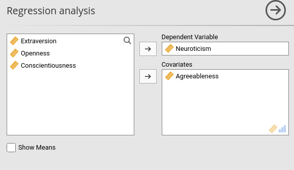
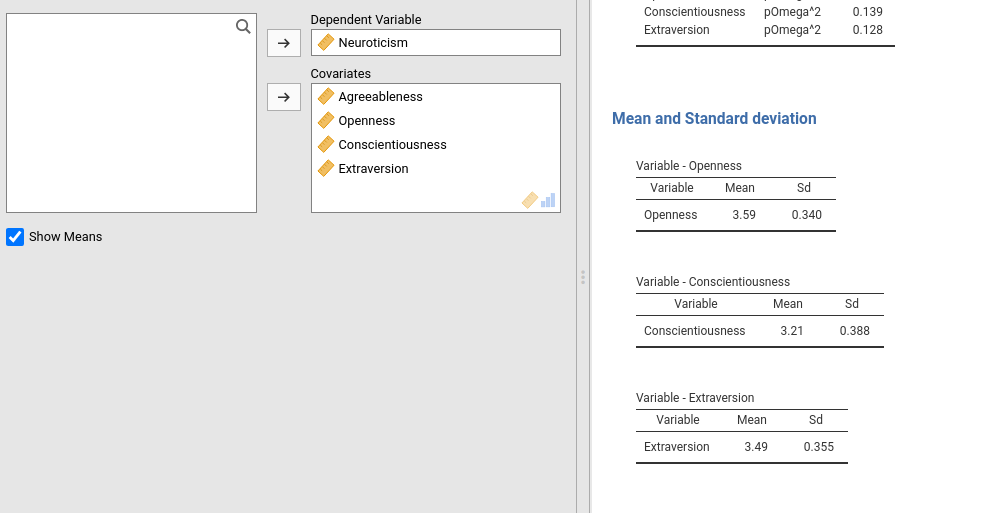
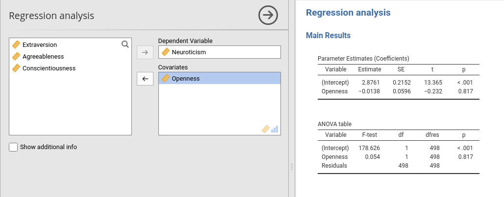
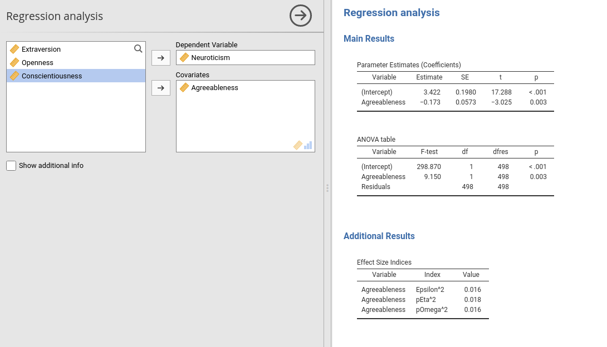

Chapter 5 Dynamic Tables Display
5.1 Introduction
Not every table is useful every time we run the analysis. Sometimes you want to hide a table, sometimes a hidden table should appear. jamovi allows hiding and showing the tables as default and programmatically, jmvScaffold helps make the process a bit smoother.
Let’s make our module a bit more complex adding one option in the GUI. It allows the user to show the sig_means array, that we now want hidden by default.
In the .a.yalm file, we add this two options.
#...#
- name: show_means
title: "Show Means for Sig."
type: Bool
default: false
#...#
5.2 Showing table on options change
In this example, we want the sig_means array to be shown only when the user selects Show means for Sig. in the GUI. We need to modify the .r.yaml file as follows:
#...#
- name: sig
type: Group
title: Significant covariates
visible: (show_means)
items:
- name: means
title: ""
type: Array
visible: (show_means)
template:
title: Variable - $key
type: Table
columns:
- name: var
title: "Variable"
type: text
- name: mean
title: "Mean"
type: number
- name: sd
title: "Sd"
type: number
#...#Notice the visible: property. This means that the Array will be shown only if show_means is set to TRUE, thus when the user flags it. No other modification of the code is required. Notice, furthermore, that given the way SmartArray and SmartTable are implemented, if the table or the array is not visible, the functions to fill it are not run, so an advantage in performance is gained by not running computation that is not need.
If you want a table or array to be visible by default by hidden by choice, just set the default of the associated option as true.

5.3 Showing tables programmatically
Sometimes you want your module to show tables only when necessary, and the necessity arises from the results. As an example, assume that you want to show the section Additional Ouput only if there is some significant results (again, silly example but we need a case in studying). With this aim, we do not know in advance if the table will be shown, so we have to make it visible only when the results suggest so.
There are different strategies to accomplish that, maybe the easiest one is the following.
Define in the r.yaml file the table as not visible by default with visible: false.
- name: additional
type: Group
title: Additional Results
items:
- name: effects
title: Effect Size Indices
type: Table
visible: false ## here we set the default as not visible
columns:
- name: var
title: "Variable"
type: text
- name: index
title: "Index"
type: text
- name: value
title: "Value"
type: number
format: ztoThen go to the .b.R file, in the .init() function, and set the properties of the table as shown here.
atable <- SmartTable$new(self$results$additional$effects,private$.runner)
atable$activateOnData <- TRUE
private$.tables[[length(private$.tables)+1]]<-atableThe $activateOnData property is crucial here: It tells the SmartTable to check its data source (i.e. runner$run_additional_effects()) and make itself visible only if it receives some data.
Now we need to be sure that the run_additional_effects() returns something only if there is a significant result in the coefficients.
In the Runner.R file, we change the function in:
run_additional_effects=function() {
## check the covs ##
results <- as.data.frame(summary(self$model)$coefficients)
results <- results[-1,]
whichcovs <- rownames(results[results[,4]<.05,])
if (length(whichcovs)==0)
return(NULL)
eps <- effectsize::epsilon_squared(self$model)
eps_df <- data.frame(var=eps$Parameter,index="Epsilon^2",value=eps$Epsilon2)
eta <- effectsize::eta_squared(self$model)
eta_df <- data.frame(var=eta$Parameter,index="pEta^2",value=eta$Eta2)
omega <- effectsize::omega_squared(self$model)
omega_df <- data.frame(var=eta$Parameter,index="pOmega^2",value=omega$Omega2)
tab <- rbind(eps_df,eta_df,omega_df)
return(tab)
},If you are using the Big 5 data buddled with jamovi, you can try predicting Neuroticism with Openess, which will not show the table, and then with Agreebleness, which will show the table


5.4 Additional strategies
Usually the yaml property visible:(option) or the SmartTable $activateOnData are sufficient for all cases of dynamic table display If, however, the developer needs more flexibility, one can set the visible: property to false, and use $activated property of SmartTable. $activated accept TRUE or FALSE, and it is equivalent to the jamovi function table$setVisible(BOOL). Using $activated, however, will also not run the code required to fill the table when $activated<-FALSE, so you do not need to take precaution again running useless computation.